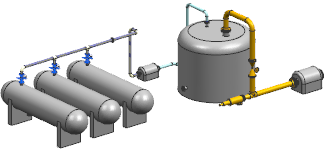
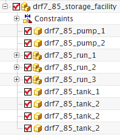
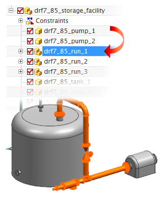
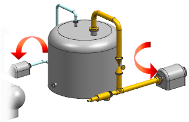

Open the part and review its structure
-
Open drf7_85_storage_facility.prt.

-
Open the Assembly Navigator
 .
.

There are three pipe runs in this assembly:
-
drf7_85_run_1
-
drf7_85_run_2
-
drf7_85_run_3
-
-
In the Assembly Navigator, select a run’s node to see its member components highlight in the view.

Each one of these three runs will be the primary content of a separate drawing sheet in your booklet.
You will also assign the two pumps as secondary content in the booklet.

You can edit the display characteristics of the secondary content on each sheet without affecting the display of the primary content.
You will also designate the four large storage tanks in the assembly as excluded content.

Excluded content does not appear in any of the drawing sheets in the booklet.